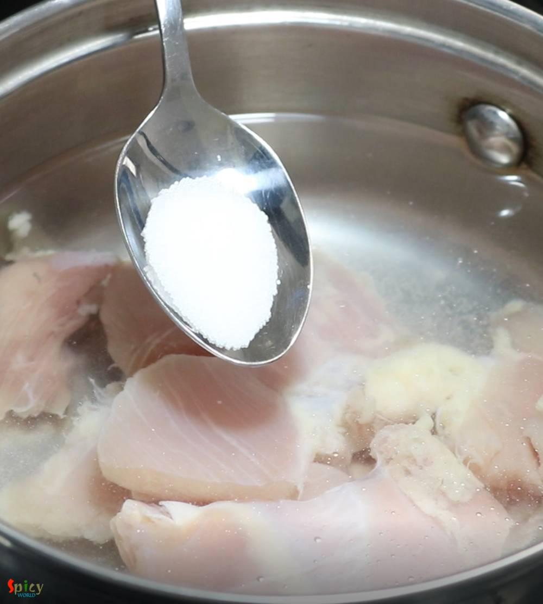

Simple and Easy Recipes
Chicken Hot and Sour Soup
© 2016 Spicy World, Published on: Jan 28, 2019
Chicken Hot and Sour Soup is one of the popular soup variety from Chinese cuisine. In this silky, spicy, sour broth you can add almost everything like chicken, egg, tofu and many kinds of vegetable. Hot and sour soup tastes best (especially) during winter or monsoon and it can also uplift your taste buds. Try this easy recipe in your kitchen and let me know how it turned out for you.

Ingredients
- 1 chicken thigh.
- Finely chopped some (onion, capsicum, carrots, baby corn).
- 3 Teaspoons of finely chopped garlic and ginger.
- 2 Teaspoons of dark soy sauce.
- 3 Tablespoons of (red) chili sauce.
- 3-4 Tablespoons of cornflour diluted water.
- Salt and sugar.
- 2 Teaspoons of ground black pepper.
- Cooking oil 3 Teaspoons.
- Vinegar 4 Teaspoons.
- 2 - 3 cups of water.
- Some chopped spring onion.


Steps
Heat 2 cups of water in a saucepan. Add the chicken and some salt. Boil for 10 minutes.
Take out the chicken from the stock in a bowl. Keep the stock aside for later use.
Shred the boiled chicken into thin strips.

Heat oil in a wok or saucepan.
Saute chopped garlic and ginger for few seconds.

Then add chopped onion, fry for 2 minutes.
Next add all of the chopped vegetables. Fry for another 2 minutes.

For the seasoning add some salt, black pepper powder, red chili sauce and soy sauce. Mix well.

Now add the chicken stock and shredded chicken. Mix well and cook for 7-10 minutes on high flame. Do not make the veggies mushy.

Add the cornflour diluted water and stir immediately. This will thicken the soup and make it silky.
Then add a pinch of sugar and the vinegar. Mix and turn off the heat. You can add more vinegar if you want.
Lastly add chopped spring onion all over the soup.
Your chicken hot and sour soup is ready.
Serve this hot with fried rice.
")